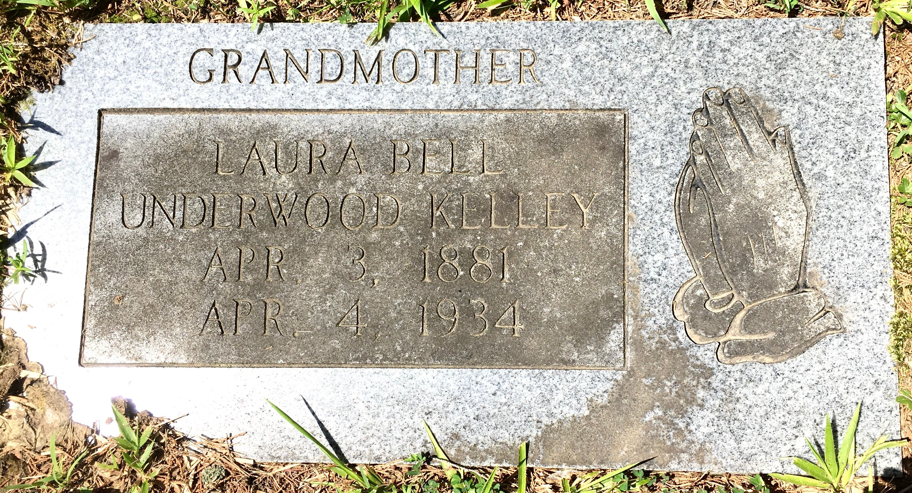

Laura Bell Underwood
3 April 1881 – 4 April 1936
Quick Facts
Immediate Family
Parents
Not proved UNPROVED — her death certificate names her father only as "Not known Underwood"Children
Bessie M. Ramsey (about 1899–1967) SUPPORTEDSarah Hazel Kelly (1912–1987) DOCUMENTED
William Edward "Bill" Kelly (born about 1914) DOCUMENTED
Julia Bell Kelly (1914–1997), married William Alexander Brewster 15 June 1929, Newport, Kentucky DOCUMENTED
On Family Tree Sites
Couple Folder
Life Timeline
1881 · age 0
Born, 3 April, Corinth, Alcorn County, Mississippi DOCUMENTED
1920 · age 38
Enumerated as Belle Kelley at Aragon, Polk County, Georgia, 20 January, with husband James and children Bessie, Sallie, William, and Julia DOCUMENTED
1936 · age 55
Died, 4 April, Brewstertown, Morgan County, Tennessee; buried at Brewstertown Cemetery, 5 April DOCUMENTED
Life Story
Laura Bell Underwood was born on 3 April 1881 in Corinth, Alcorn County, Mississippi, according to her Tennessee death certificate. Her father is named on that certificate only as "Not known Underwood," and her mother is not named at all; her parents are not proved.
She married James Patrick Kelly about 1906–1910, though no marriage record has been located. On 20 January 1920 she was enumerated as Belle Kelley at Aragon, Polk County, Georgia, with her husband James and four children in the household: Bessie, Sallie, William, and Julia. Her daughter Sarah Hazel — Sallie — later married Homer William Brewster Sr., and her daughter Julia married William Alexander Brewster.
Laura died on 4 April 1936 at Brewstertown, Morgan County, Tennessee, of uterine cancer, and was buried at Brewstertown Cemetery on 5 April. Her daughter Sarah Hazel was the informant on the certificate. Her flat granite marker reads "Laura Bell Underwood Kelley, Apr. 3, 1881, Apr. 4, 1934" — two years earlier than the certificate's death year.
Photo Gallery

Sources and Evidence
- Tennessee death certificate #10441, Laura Belle Kelley (1936): born 3 April 1881, Corinth, Mississippi; died 4 April 1936, Brewstertown; cause cancer of uterus; father "Not known Underwood"; informant daughter Sally Brewster; burial Brewstertown, 5 April 1936 DOCUMENTED
- 1920 U.S. census, Aragon, Polk County, Georgia, ED 170, sheet 17-B, 20 January 1920: Belle Kelley, born Mississippi, with husband James P. and children Bessie, Sallie, William, Julia DOCUMENTED
- Marker photograph, Brewstertown Cemetery (2021): "LAURA BELL UNDERWOOD KELLEY / APR. 3, 1881 / APR. 4, 1934", praying hands DOCUMENTED
- Kentucky County Marriages: Julia B. Kelly × William Brewster, 15 June 1929, Newport, Campbell County DOCUMENTED
Grades: DOCUMENTED an original record says it · SUPPORTED several records point to it · FAMILY ACCOUNT the family's own telling · UNPROVED a lead, not proved.
Research Notes and Open Questions
- Parents are not proved. Her death certificate names her father only as "Not known Underwood" and leaves her mother blank. No parent names are carried here.
- Death year conflicts: 1936 on the death certificate vs 1934 on the marker. The certificate is contemporaneous and is carried as the death year; the marker reading is shown in the gallery.
- Birthplace: Corinth, Alcorn County, Mississippi, per the certificate. A Perry County, Mississippi birthplace carried on some trees has no certificate support.
- Two earlier marriages sometimes attached to Laura do not stand: the 1899 Bond marriage in Obion County is a different Laura, and the 1904 Davis marriage in Loudon County is unproved as hers. Neither is listed as her marriage here.
- Bessie's birth about 1899 predates the assumed 1906–1910 marriage by years; how she fits the family chronology is unresolved.
- Julia's birth year conflicts (1920 census about September 1915 vs 6 January 1914 on Geni) and her death day conflicts (27 August vs 22 August 1997); years only are carried here.
- The family has not been found in the 1930 census under Kelly or Kelley.
Profile history: Created 4 November 2026 from the family couple profile and research notes.